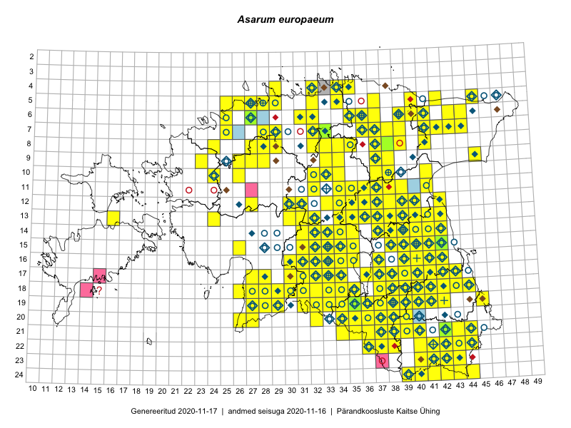

Asarum europaeum
Uuendatud: 2016-12-01
Kaardile koondatud taksonid: Asarum europaeum L.

Kaart põhineb 362 kirjel, neist vaatlusi 360 ja eksemplare 2.
Kuvatud viited 20 esimesele andmebaasikirjele, ülejäänud PlutoFis
- Malle Leht: 2015-07-09: : ala
- Meeli Mesipuu, Kadri Tali: 2015-04-30: 17-40: ala
- Meeli Mesipuu, Kadri Tali: 2015-04-30: 17-39: ala
- Peedu Saar: 2015-05-09: 13-30: ala
- Peedu Saar, Timo Luhamäe: 2015-05-10: 12-31: ala
- Peedu Saar, Timo Luhamäe: 2015-05-11: 11-36: ala
- Peedu Saar, Timo Luhamäe: 2015-05-11: 12-37: ala
- Peedu Saar, Timo Luhamäe: 2015-05-13: 07-39: ala
- Peedu Saar, Liina Oja: 2015-05-20: 18-27: ala
- Peedu Saar, Liina Oja: 2015-05-20: 18-26: ala
- Toomas Kukk, Peedu Saar: 2014-09-25: 07-42: ala
- Toomas Kukk, Peedu Saar: 2014-09-13: 07-42: ala
- Toomas Kukk, Peedu Saar: 2014-09-23: 07-42: ala
- Peedu Saar: 2015-05-01: 15-42: ala
- Peedu Saar: 2015-05-01: 16-42: ala
- Peedu Saar: 2015-05-01: 16-42: ala
- Tiit Hallikma, Toomas Kukk: 2015-07-21: 05-45: ala
- Toomas Kukk, Raivo Kalle: 2015-05-14: 10-41: ala
- Peedu Saar, Ott Luuk: 2015-06-21: 14-42: ala
- Peedu Saar: 2015-07-04: 18-44: ala